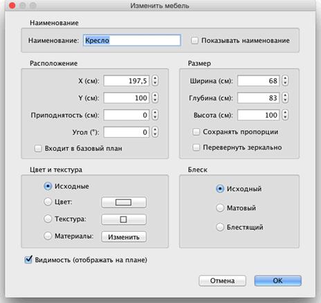

| Редактирование фурнитуры | |||
Вы можете изменить позицию, размер и угол домашней фурнитуры с помощью мышки или меню Фурнитура >
Изменить.... Когда одна часть выделена на плане, Вы можете изменить ее размер, подъем или угол, с помощью четырех индикаторов по углам выделенной части.
|

|
Когда мышка находится над объектом, она меняет вид и показывает значение свойства этого объекта. В этот момент можно изменить данное свойство фурнитуры. При нажатии кнопки мыши, появится окно изменения свойств. Можно менять свойства непосредственно на плане, при двойном клике на объекте появится панель свойств выделенного объекта. Так же можно изменять выделенную фурнитуру в пункте менюФурнитура > Изменить....  У фурнитуры на плане возможно изменять наименование, угол поворота, абсциссу (X) и ординату (Y), уровень подъема над полом, ширину, глубину, высоту, цвет, видимость и зеркально отобразить 3D модель. |
|